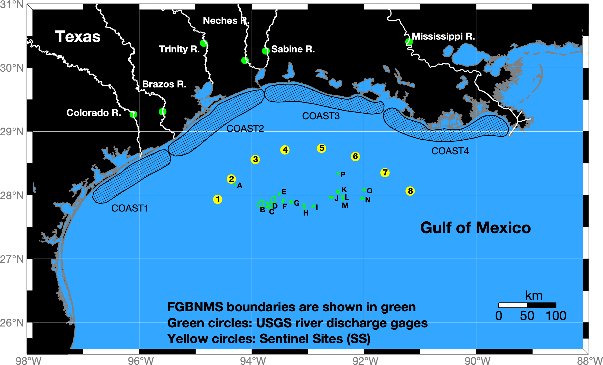

Flower Garden Banks Data Dashboard
| Code | Site Name |
|---|---|
| A | Stetson Bank |
| B | West Flower Garden Bank |
| C | Horseshoe Bank |
| D | East Flower Garden Bank |
| E | MacNeil Bank |
| F | Rankin/28 Fathom Bank |
| G | Bright Bank |
| H | Geyer Bank |
| I | Elvers Bank |
| J | McGrail Bank |
| K | Bouma Bank |
| L | Rezak Bank |
| M | Sidner Bank |
| N | Parker Bank |
| O | Alderice Bank |
| P | Sonnier Bank |
| COAST 1-4 | Coastal Regions of Interest |
| SS 1-8 | Sentinel Sites |
Welcome

Recent 7-Day mean satellite images
%5D%5B(25):(30)%5D%5B(-95):(-90)%5D&.draw=surface&.vars=longitude%7Clatitude%7Cchlor_a_median&.colorBar=%7C%7C%7C%7C%7C&.bgColor=0xffccccff&.legend=Only)